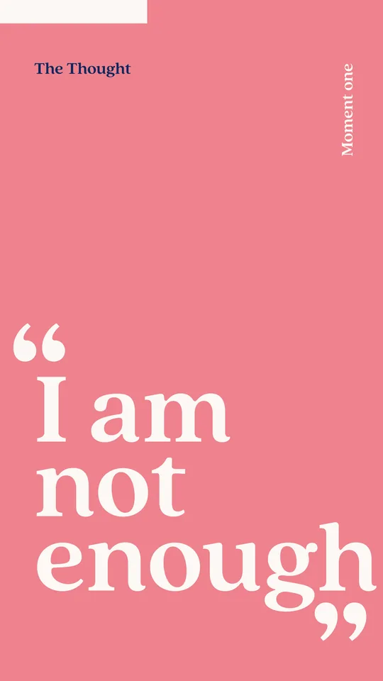
Beat 01
Her Inner Voice
Each moment opens in her own interior voice, saying the thing she'd never say out loud. The design's job was not to soften them.
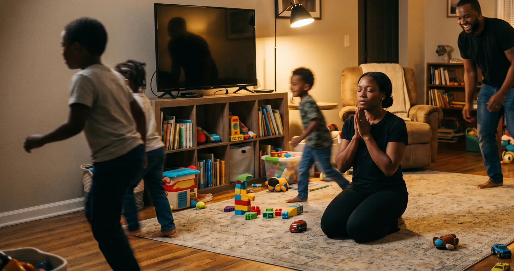
Case Study
Context
“Power of a Praying Mom” was an activation within Compassion USA's Unto Jesus campaign, a top-of-funnel, influencer-led effort to reach Christian moms across the US.
The campaign was inspired by Matthew 25:40: every act of compassion toward others is an act of love Unto Jesus. As part of it, leadership asked me to create a digital Mother's Day giveaway to contribute toward our annual goal of 7,000 new leads across three activations. The proposed starting direction was to repurpose an existing five-day devotional on prayer. This case study will walk you through my process.
To capture new leads on social media, the resource had to earn attention on its own and move a mother deeply enough that she'd give her email to a brand she didn't yet know.
The work had to start with no influencer signed, no clear brief, limited internal digital capacity, and a hard launch date already set.
The key question I kept asking: Would a busy mom hand over her email for one more devotional pointing her to another ideal she can't reach?
US Christian mothers are spiritually hungry but emotionally exhausted. What she needed was permission to be imperfect and a path back to Jesus. This insight became the foundation every creative decision was built on.
The research confirmed my instinct: a polished five-day devotional was the wrong answer for an audience already drowning in ideals. I developed the concept instead as Seven Honest Prayers for Seven Real Moments of Motherhood — closer to a modern-day lament than a devotional, built to sit with her in the hard moment, be honest about where she is and give room for God to speak to her.
Core idea
Structuring the narrative
I wanted the resource to be something a mother could return to in her moment of need, not a seven-day plan she'd fall behind on. So I framed it as moments: emotional truths she was already living, where she could be met with compassion.
All seven moments were built on a five-beat framework that dropped her into a snapshot of her life and moved her to the heart of the campaign.

Beat 01
Each moment opens in her own interior voice, saying the thing she'd never say out loud. The design's job was not to soften them.
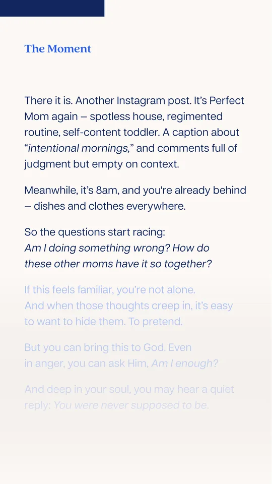
Beat 02
The 8am scroll past a perfect mom's post while she's already behind. Specificity was the key test for every single scene.
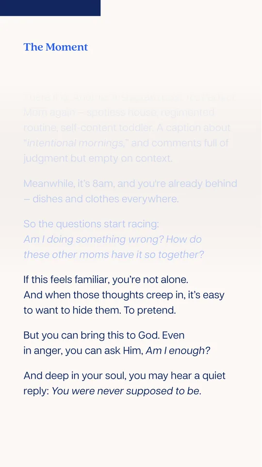
Beat 03
"You were never supposed to be perfect." A single line that releases the lie without dismissing the heavy ache underneath.
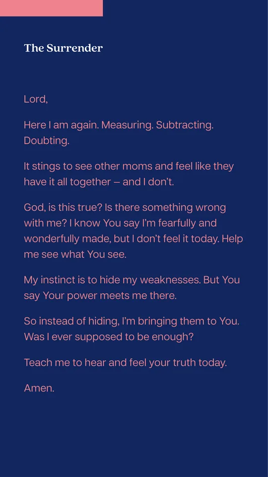
Beat 04
A prayer modeled on the biblical laments, giving her permission to express things she dares not speak, scripture woven in gracefully.
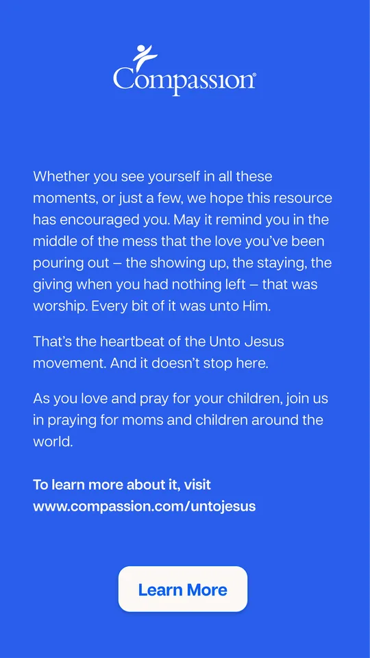
Beat 05
Matthew 25:40 lands inside her own story; the love she pours out in obscurity is love given to Jesus himself. Revelation over branding.
Owned channels
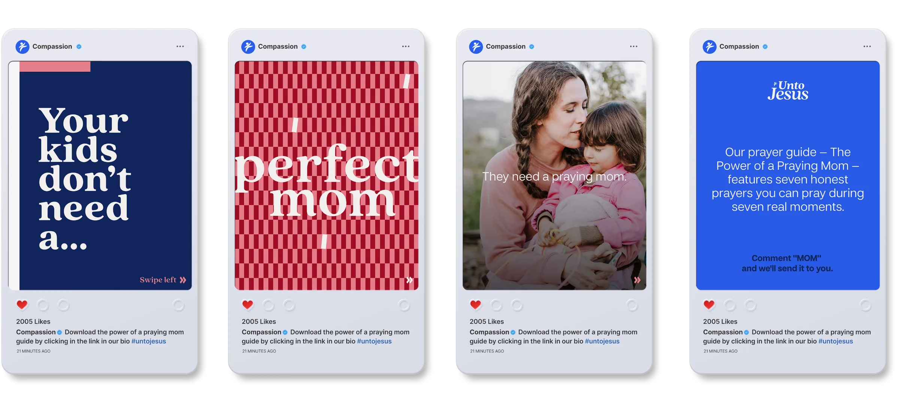
Influencer partnerships
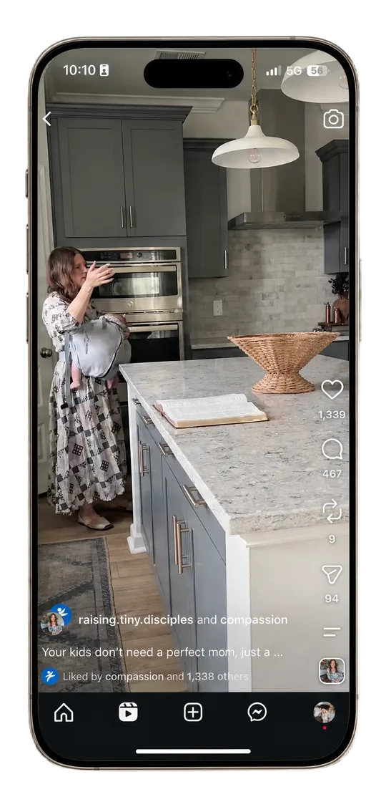
Reel
Click on the image to view the Reel.
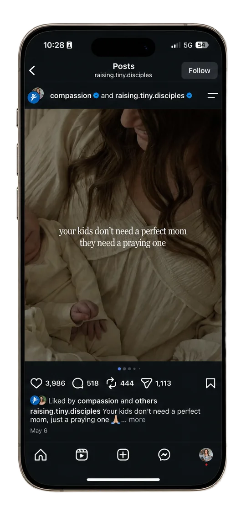
Post
Click on the image to view the Post.
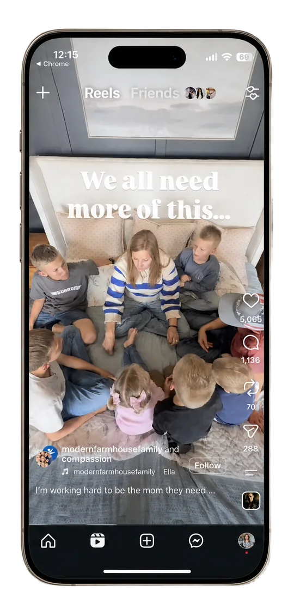
Reel
Click on the image to view the Reel.
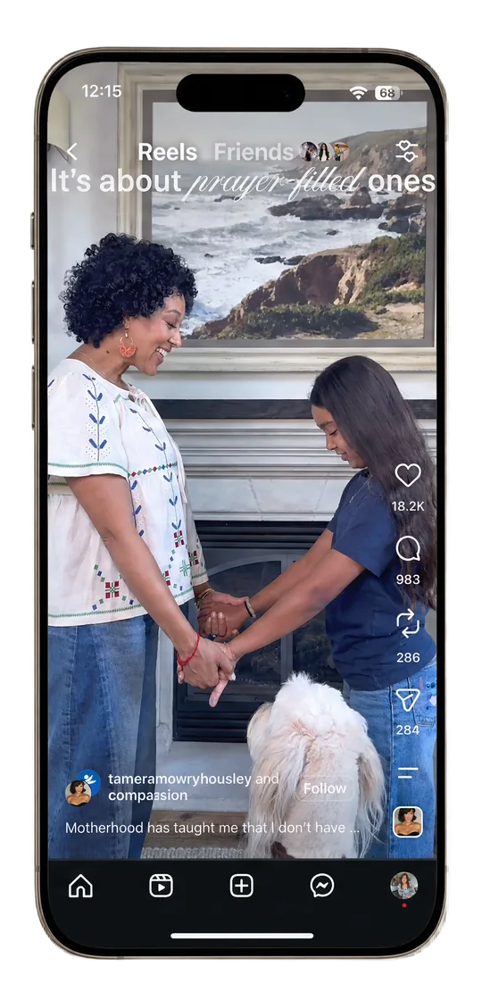
Reel
Click on the image to view the Reel.
Brand partnerships
The seven-moments framework in devotional form: seven recognized moments of motherhood, each met with Scripture and a prayer written to meet a mom where she actually is, carrying the Unto Jesus truth that even the messy parts are lived unto Jesus.
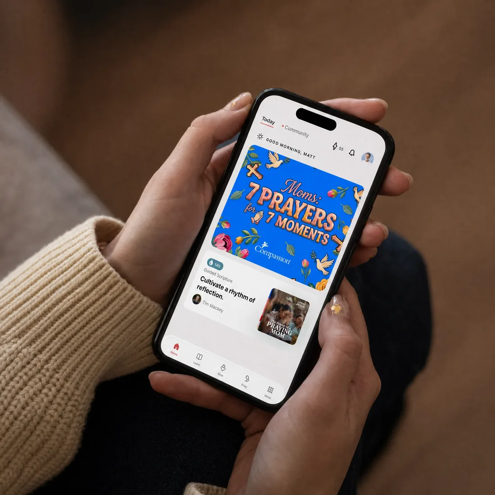
Impact
The year's goal was 7,000 leads across three activations, roughly 2,300 each.
The Power of a Praying Mom captured 6,948 leads on its own, close to the entire target from a single activation. It drove 10 million organic impressions across its influencer partners and a 52% engaged-session rate, the highest of any activation that year.